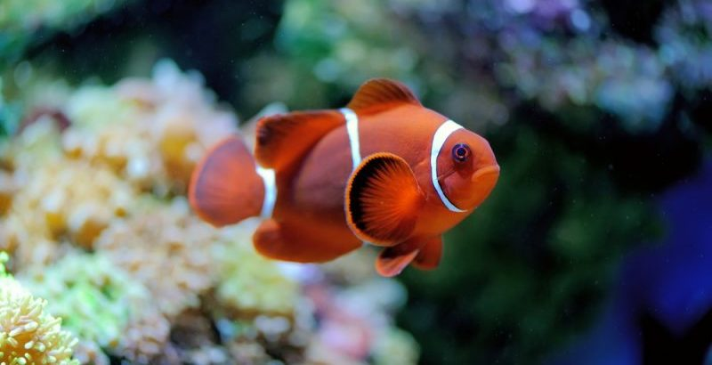
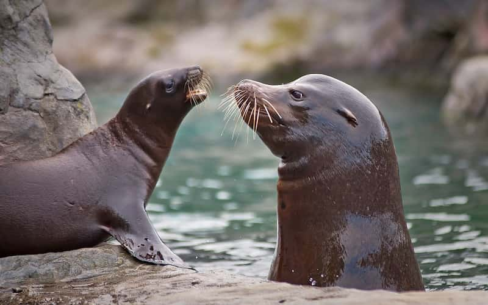

los animales acuaticos
Los animales acuáticos de este grupo se caracterizan por la presencia de escamas, respiración pulmonar y un sistema
circulatorio que les permite estar tanto en el agua como en la tierra. Las iguanas, las tortugas marinas y
los cocodrilos son algunos animales representativos de esta categoría.

